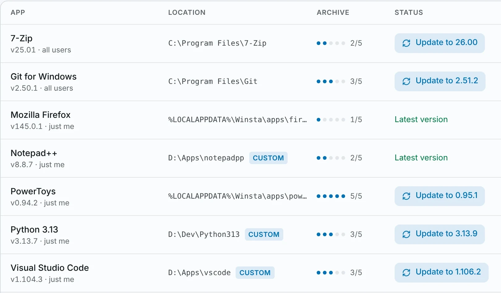

Choose the install location
Install to Winsta’s default folder or any folder you pick, like drive D: to save space on your system SSD. Winsta tells you whether each installer type supports a custom folder and checks free disk space first.
